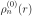
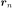

When far from resonance, the simplest model for an atomic scattering
factor is to assume the atom has an
electron density
 and calculate the form factor in equation
46. For a rotationally symmetric atom8 situated at the origin, the atomic scattering factor is defined
as9
For an atom located at the position , the scattering factor takes on
the phase shift
A very common way of accounting for anomalous dispersion in atomic scattering
factors is to include real and imaginary energy-dependent “dispersion
correction” terms to the scattering factors:
The above three terms can be found in many tabulations in the literature.
For an assembly of atoms, the overall form factor (equivalent to equation
46) is
We sometimes define the “scattering density” as the inverse
Fourier transform of the above: